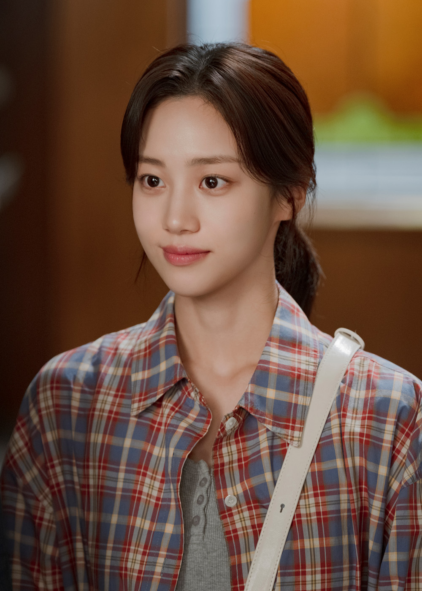
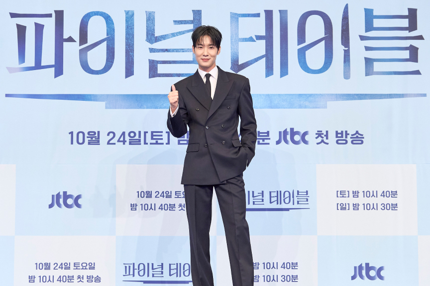
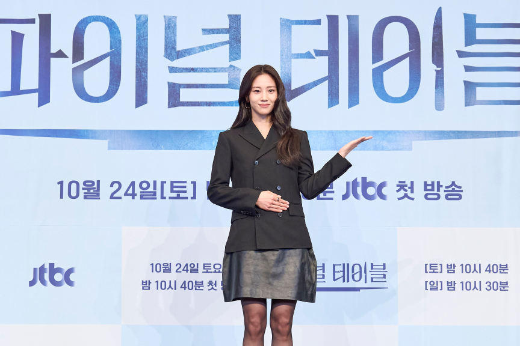

파이널 테이블 첫방 1.9%, 안효섭의 반전은
안효섭이 천재 셰프로 나선 파이널 테이블, 첫방 시청률은 1.9%였어요. 숫자도 궁금하지만 폐업 위기 식당에서 시작된 두 사람의 인연이 눈길을 끄네요. 강한과 최송이의 첫 만남부터 주방 위기를 담은 2회 예고까지, 어떤 이야기가 기다리는지 함께 짚어봐요.
파이널 테이블 첫방 시청률 1.9%의 출발
안효섭이 요리 고수로 변신한다는 설정부터 궁금해지는 작품이네요. JTBC 토일드라마의 첫 회 시청률은 전국 유료가구 기준 1.9%예요. 화려한 요리 대결을 앞세운 이야기지만, 출발점에는 식당을 지키려는 사람과 추억 속 맛을 찾아온 사람이 있어요. 경연장의 순위보다 인물들이 그 승부에 나서야 하는 이유를 먼저 펼쳐 놓은 구성이에요. 첫 숫자가 아쉽게 느껴질 수 있어도 한 회의 성적만으로 작품 전체의 흐름을 정하기는 어려워요.
작품의 큰 무대는 최고의 한국인 요리사를 가리는 요리 서바이벌이에요. 세계 곳곳에서 활동하는 한국인 셰프들이 모여 각자의 음식을 선보이는 설정이죠. 서로 다른 실력과 사연이 한 주방에서 부딪힌다는 점이 흥미로워요. 요리 장면의 볼거리와 인물의 감정이 얼마나 잘 어우러질지가 관전 포인트겠네요. 누가 이기는지도 궁금하지만, 왜 그 한 접시에 마음을 쏟는지 알게 되면 응원하는 인물도 더 뚜렷해질 것 같아요.
‘파이널 테이블’ 제작발표회에 함께한 출연진 자료사진 · 출처: JTBC 홈페이지추억의 맛을 찾은 강한, 식당을 지키는 최송이
안효섭이 맡은 강한은 해외에서 요리 실력을 쌓고 자신만의 방식으로 살아가는 인물이에요. 아버지와의 기억이 남아 있는 레스토랑 파밀리아를 찾지만, 음식은 그가 간직한 맛과 달라져 있어요. 강한은 그 차이에 격하게 반응하고, 식당을 지키던 최송이에게 날카로운 말을 남겨요. 반가운 재회가 될 수도 있었던 방문이 오히려 서로에게 상처를 주는 만남으로 이어진 셈이에요. 추억을 소중히 여기는 마음이 상대의 사정까지 이해하게 해주지는 않았네요.
홍화연이 연기하는 최송이는 아버지 최승효가 남긴 파밀리아를 포기하지 못하는 딸이에요. 홀 매니저로 식당을 돌봐 왔고, 뛰어난 미각을 지녔지만 주방에 들어가는 일은 꺼리는 인물이죠. 아버지를 잃은 슬픔에 폐업 위기까지 겹친 송이에게 강한의 비난은 더욱 아프게 다가와요. 같은 식당을 아끼면서도 한쪽은 기억 속 음식을, 다른 한쪽은 무너져가는 공간을 붙잡고 있다는 차이가 보여요. 두 사람이 서로를 이해할 수 있을지 궁금해지는 이유예요.
안효섭이 연기하는 강한의 공식 인물 소개 사진 · 출처: JTBC 홈페이지파밀리아가 두 사람에게 특별한 이유
파이널 테이블에서 파밀리아는 단순히 요리 대회를 준비하는 장소보다 더 큰 의미를 가져요. 강한에게는 아버지와 나눈 기억이 깃든 식당이고, 송이에게는 아버지의 삶과 노력이 남아 있는 공간이거든요. 강한의 요리에는 요리사였던 아버지에게 배운 것들이 바탕이 돼 있어요. 송이 역시 아버지의 음식과 식당을 누구보다 아끼는 사람이에요. 출발은 거칠었지만 두 사람에게 음식과 가족의 기억이 깊이 연결돼 있다는 공통점은 분명하네요.
그래서 식당을 되살리겠다는 목표에는 매출을 회복하는 것 이상의 감정이 담겨 있어요. 송이는 아버지가 남긴 공간을 지키고 명예도 되찾고 싶어 해요. 강한은 그 식당에서 잃어버린 맛과 자신의 기억을 마주하게 됐고요. 작품이 음식으로 상처를 보듬는 이야기를 내세우는 만큼, 요리가 두 사람 사이의 오해를 풀어주는 계기가 될지도 기대돼요. 서툰 위로의 말보다 정성껏 만든 한 접시가 마음에 먼저 닿는 전개라면 이 관계가 한층 따뜻해질 것 같아요.

홍화연이 연기하는 최송이의 공식 인물 소개 사진 · 출처: JTBC 홈페이지장률의 차우진과 정유진의 선정원도 주목해요
셰프들의 경쟁을 이해하려면 장률이 맡은 차우진도 알아두면 좋아요. 차우진은 레스토랑 엑셉시옹의 오너 셰프이자 평연 F&B의 크리에이티브 디렉터예요. 정확하고 엄격한 요리를 추구하는 완벽주의자로, 정해진 틀에 얽매이지 않는 강한과는 결이 달라요. 인물 설정에는 강한이 크리스 K라는 이름으로 활동했고, 차우진에게 패배의 기억을 안긴 상대라는 관계도 담겨 있어요. 같은 재료를 받아도 전혀 다른 답을 내놓을 듯한 두 셰프의 대결이 궁금하네요.
정유진이 연기하는 선정원은 요리 서바이벌의 총괄 프로듀서예요. 경연을 만드는 쪽에서도 누구를 무대에 세울지 선택해야 하니, 요리사들의 경쟁과 또 다른 긴장감이 생겨요. 평연그룹이 추진하는 대회라는 점은 아버지의 일로 그룹에 분노를 품은 송이에게 복잡한 문제이기도 해요. 식당을 살릴 기회와 쉽게 믿을 수 없는 상대가 같은 무대에 놓인 셈이죠. 셰프의 솜씨뿐 아니라 참가자와 제작진의 이해관계가 어떻게 엇갈리는지도 살펴볼 만해요.

‘파이널 테이블’ 제작발표회 현장 자료사진 · 출처: JTBC 홈페이지파이널 테이블 2회 예고, 위기의 주방에서
공개된 2회 예고는 주방 사고로 위기에 놓인 파밀리아를 중심으로 이어져요. 실의에 빠진 송이를 위해 강한이 직접 요리를 맡고, 넉넉하지 않은 식재료와 갖춰지지 않은 환경에서 실력을 펼치는 내용이 담겨 있어요. 멋진 주방과 고급 재료가 주는 화려함보다 손에 있는 것으로 무엇을 만들어내는지 보여주는 상황이라 더 궁금하네요. 송이에게 상처를 줬던 강한이 음식을 통해 어떤 마음을 전할지도 기대되는 부분이에요.
예고에는 강한의 요리를 맛본 선정원이 그의 실력과 정체에 관심을 갖는 흐름도 제시돼요. 송이에게 파밀리아의 명예를 되찾을 기회가 생긴다는 내용까지 더해져, 식당 안의 위기가 경연 무대로 연결될 가능성을 열어두네요. 다만 예고가 보여주는 기회와 그 기회를 잡은 결과는 구분해서 봐야 해요. 송이가 어떤 선택을 하고 강한과 어떻게 손을 맞출지는 본편에서 풀릴 이야기예요. 식당을 아끼는 두 마음이 하나의 요리로 이어질 수 있을지, 그 변화가 가장 궁금해지네요.

‘파이널 테이블’ 제작발표회에서 인사하는 홍화연 자료사진 · 출처: JTBC 홈페이지Q. 첫 회 시청률은 얼마인가요?
A. 전국 유료가구 기준 1.9%예요. 첫 회의 수치이므로 회차별 흐름은 별도로 살펴봐야 해요.
Q. 안효섭과 홍화연은 어떤 인물로 나오나요?
A. 안효섭은 천재 요리사 강한, 홍화연은 파밀리아를 지키려는 최송이를 연기해요. 두 사람은 식당을 둘러싼 기억과 사정이 엇갈리며 날 선 첫 만남을 갖게 돼요.
Q. 2회 예고에서는 어떤 내용이 공개됐나요?
A. 주방 사고로 위기를 맞은 식당에서 강한이 요리에 나서는 내용이 담겼어요. 선정원의 관심과 송이에게 찾아올 기회도 예고돼 있어요.
#파이널테이블 #안효섭 #홍화연 #장률 #정유진 #JTBC드라마 #토일드라마 #첫방시청률 #2회예고